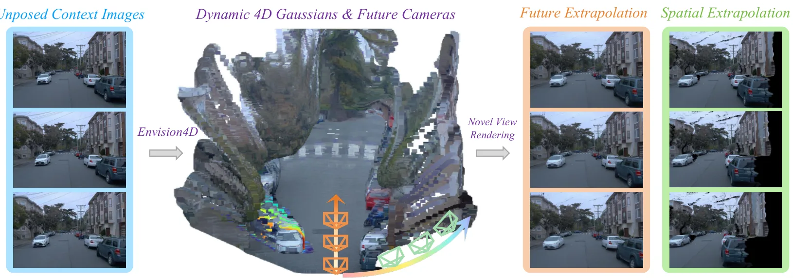
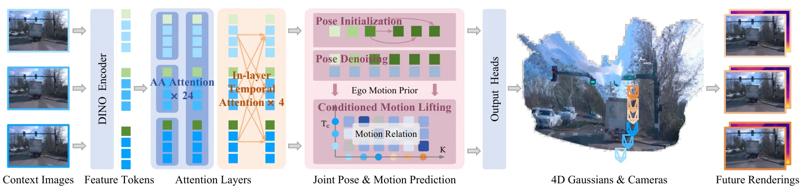
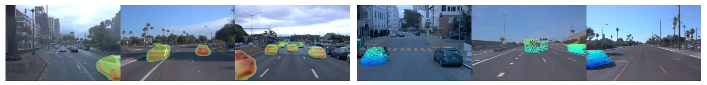
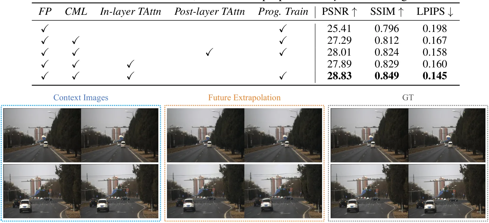
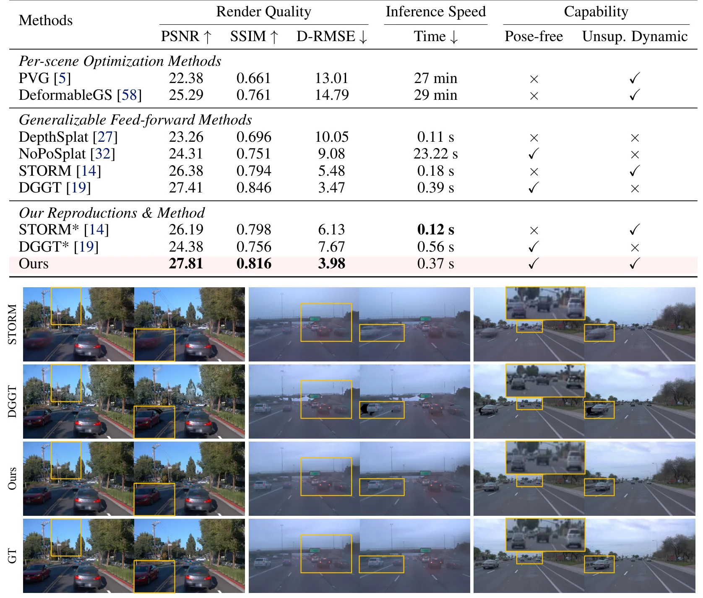
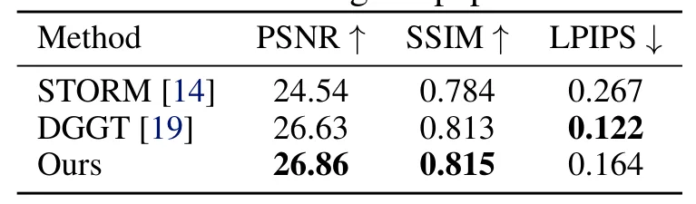
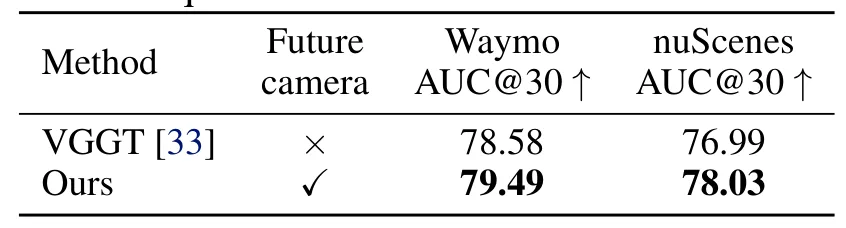
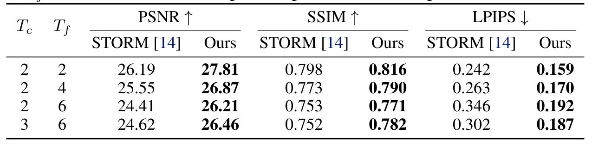

Envision4D：面向自动驾驶的前馈式 4D 高斯溅射未来视觉预测Envision4D: Envisioning Visual Futures via Feed-forward 4D Gaussian Splatting for Autonomous Driving
对自动驾驶动态 3D 表示和 world model 有参考价值，但与传统 SLAM/GNSS 解算链条较间接，需关注真实定位/地图接口。
一句话工作总结
Envision4D 用前馈 4DGS 和未来相机位姿预测做自动驾驶动态场景未来视图外推。
摘要
动态场景未来演化预测对自动驾驶非常关键，但现有前馈范式主要面向插值；当扩展到未来外推时，面对大位移会出现 ghosting，并常受限于简化运动假设或严格未来先验。Envision4D 是一个完全自监督、前馈式、pose-free 的未来外推框架。它通过 Future Pose Prediction 模块以迭代去噪方式推断未来相机参数；通过 In-layer Temporal Attention 与 Conditioned Motion Lifting 捕获非线性动态，把高度不确定的外推过程转化为更稳健的关系映射；最后使用 Progressive Training Strategy 缓解无监督运动学习中的误差累积。实验显示该方法在未来视图合成上达到 SOTA。
Forecasting the future evolution of dynamic scenes is crucial in autonomous driving. However, existing feed-forward paradigms are primarily designed for interpolation. When extended to future extrapolation, they suffer from ghosting artifacts under large displacements and are constrained by simplified motion assumptions or strict future priors. To overcome these challenges, we propose Envision4D, a fully self-supervised feed-forward framework for pose-free future extrapolation. Specifically, we introduce a Future Pose Prediction module that infers future camera parameters via an iterative denoising process. Furthermore, to capture non-linear dynamics, we propose In-layer Temporal Attention and employ Conditioned Motion Lifting, which transforms the highly uncertain extrapolation process into robust relational mappings. Finally, a Progressive Training Strategy is utilized to stabilize unsupervised motion learning against error accumulation. Extensive experiments demonstrate that Envision4D achieves state-of-the-art performance, significantly outperforming existing methods in future view synthesis.
中文解读摘录
- 作者：Ray Zhang, Marcus Greiff, Thomas Lew, John Subosits；类别：cs.CV / cs.AI / cs.RO；发布日期：2026-06-09；备注：16 pages, 12 figures；采集 score=14
- 核心问题：局部点云配准在 LiDAR/RGB-D tracking 中通常依赖 correspondences 或 ICP 类最近邻，特征稀疏、退化或外观变化时容易漂移；RKHS/CVO 类 correspondence-free 方法更稳但一阶优化速度偏慢。
- 方法亮点：把点云表示为带 point-wise anisotropic kernels 的连续函数，核函数编码局部几何，使法向方向更强约束、切向方向更宽松；优化上提出带近似 Riemannian Hessian 的二阶流形优化。
- 结果信号：相对以往一阶 RKHS 配准 solver 最高加速约 10×；在驾驶域 LiDAR tracking 的特征稀疏场景中，平移和旋转漂移均降低超过 55%；RGB-D 与物体配准 benchmark 也显示比 ICP 类方法更稳。
- 关注价值：这是今天最接近 SLAM 前端/里程计的工作。若开源或实现成本可控，值得尝试替换/增强 frame-to-frame LiDAR odometry、RGB-D odometry 和全局初始化后的精配准模块。
图表/页面预览
{kind=link}

{kind=link}

{kind=link}

{kind=link}

{kind=link}

{kind=link}

{kind=link}

{kind=link}
